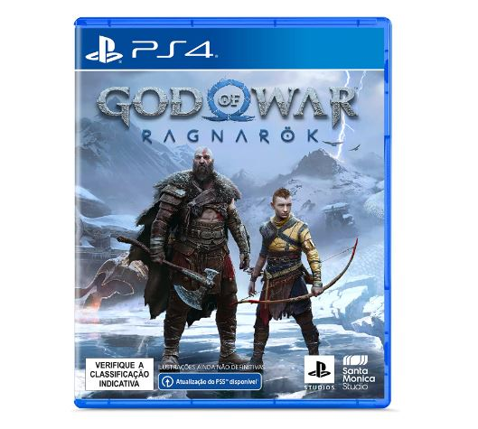

E agora que o lançamento do game foi confirmado para 08 de novembro, muitos podem estar sentindo aquela vontade de relembrar todas as aventuras do matador de deuses antes da chegada do novo título.
Então, para facilitar a vida dos amantes dessa série, montamos uma lista com os títulos em ordem cronológica, que pode ser conferida abaixo!

Fonte: Santa Monica Studio
Esta jornada de vingança e retribuição repleta de inimigos humanos, monstruosos e divinos é composta por oito games até o momento, com o nono chegando no final do ano, e sendo dispostos em uma linha temporal da seguinte forma:
Prontinho! Agora já dá para curtir essa saga baseada na mitologia grega e nórdica na ordem correta, e se preparar paro próximo capítulo de Kratos e Atreus em uma busca para evitar que o fim do mundo ocorra, precisando ainda lidar com inimigos poderosos como o deus do Trovão Thor, e Freya, uma antiga aliada que agora deseja se vingar após a morte de seu filho.
Boa maratona!

Jogo God of War Ragnarok - PlayStation 4
Embarque em uma jornada épica e comovente onde Kratos e Atreus lutam entre o desejo de manterem-se unidos ou separar-se.